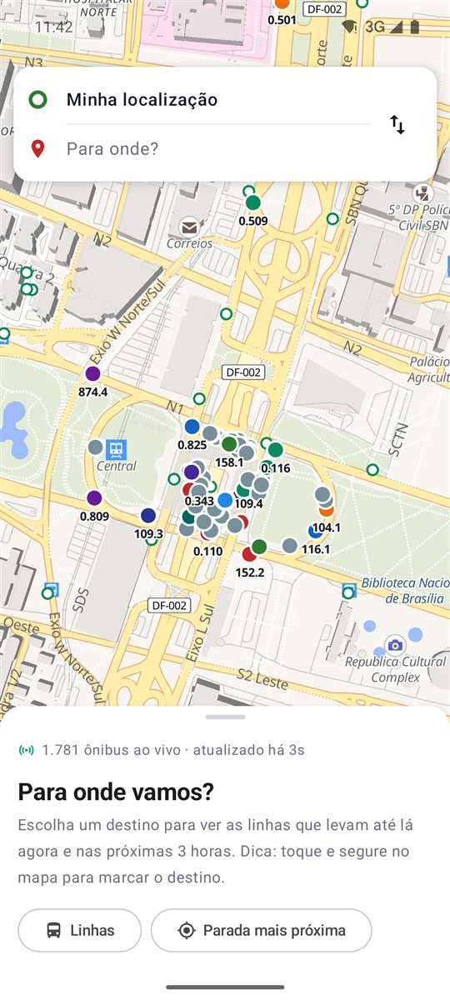
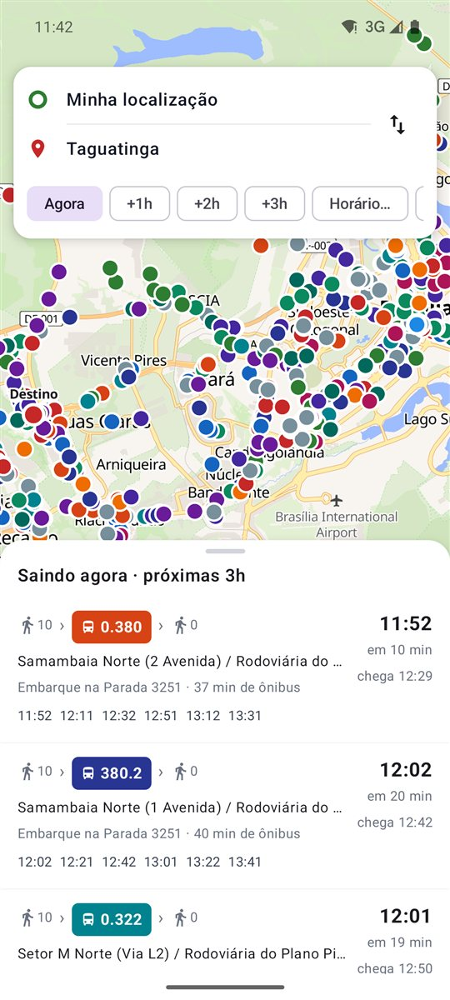
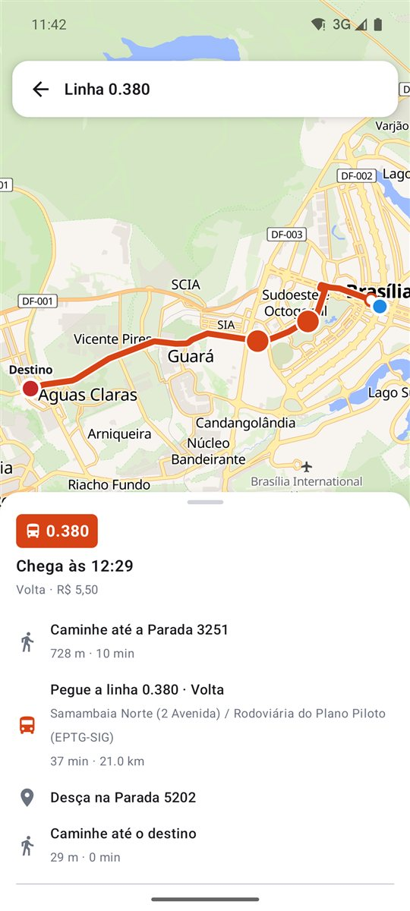
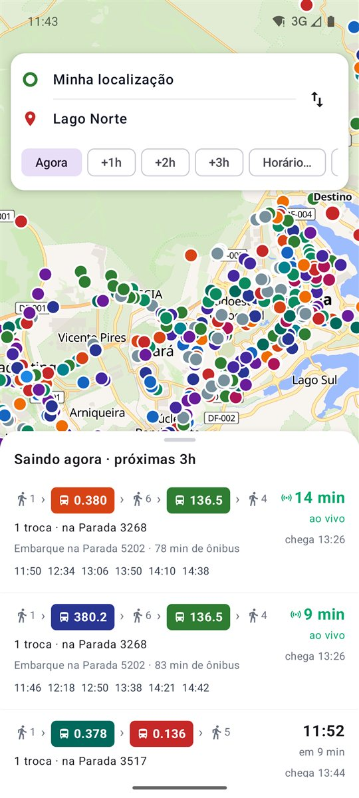
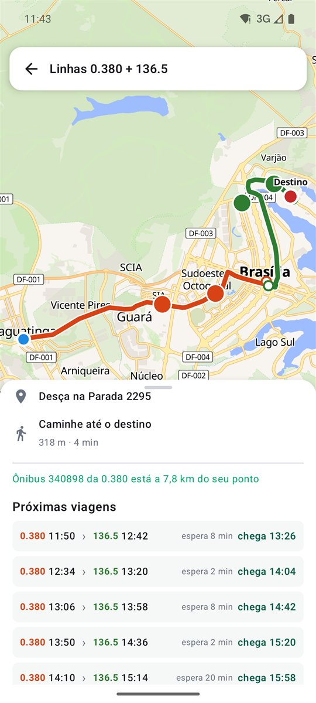
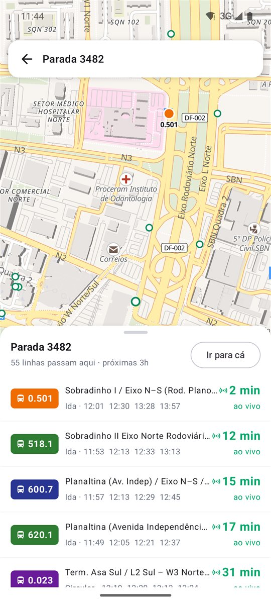

Can, and go: você pode ir.
Veja onde está cada ônibus agora, descubra quais linhas te levam ao destino, de agora até daqui a 3 horas, e quanto falta para o seu chegar no ponto.
Baixar para AndroidGrátis · APK · Android 8 ou mais recente
A posição GPS de todos os ônibus do DF, com o número da linha, atualizada a cada 15 segundos.
Escolha partida e destino e veja as linhas que levam até lá, com caminhada e hora de chegada.
Veja o que passa agora, daqui a 1, 2 ou 3 horas, ou no horário que você escolher.
Sem linha direta? O app combina duas linhas e mostra quanto você espera na troca.
Previsão pelo GPS do ônibus que está vindo para o seu ponto, e não só pela tabela.
Toque numa parada para ver tudo que passa ali, ou abra uma linha para ver o trajeto inteiro.





O Candango ainda não está na Play Store, por isso a instalação é pelo arquivo. Para atualizar, baixe de novo e instale por cima. Ainda não há versão para iPhone.
É grátis, sem anúncios e sem cadastro. O código é aberto e qualquer pessoa pode conferir.
Não. O Candango é um projeto independente que usa os dados abertos da SEMOB-DF. Ele não tem ligação com o GDF, com a SEMOB nem com as empresas de ônibus.
Os horários de saída vêm da tabela oficial. A passagem em cada parada é estimada pela distância desde o terminal. Quando o ônibus está com o GPS ligado, aparece a previsão "ao vivo", que é a mais confiável.
Porque ele não foi baixado da Play Store. O arquivo é gerado automaticamente a partir do código público no GitHub e assinado sempre com a mesma chave.
Usa só no próprio celular, para achar as paradas perto de você e calcular a caminhada. A localização não é enviada para nenhum servidor do Candango, porque não existe servidor do Candango.